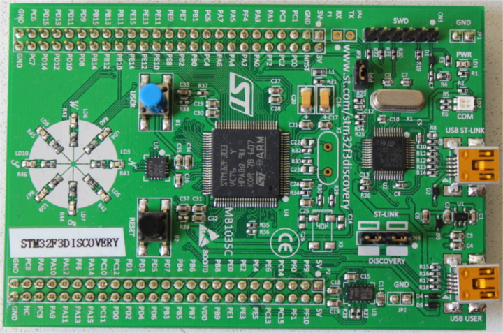
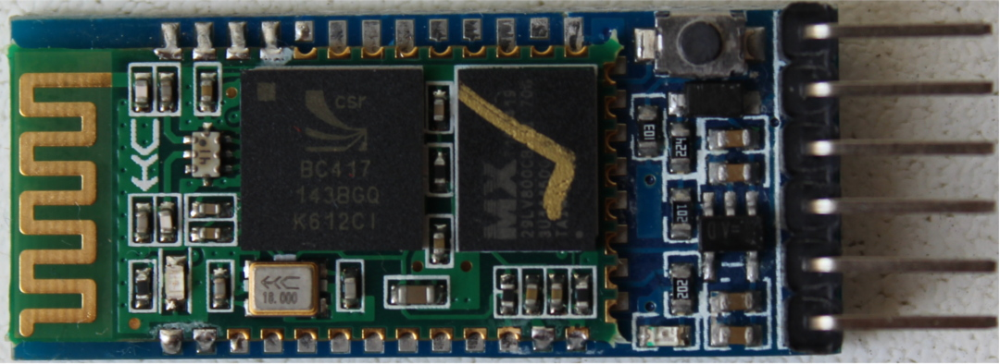

满足您的硬件
让我们熟悉一下将要使用的硬件。
STM32F3DISCOVERY (the "F3")

在本书中，我们将此板称为"F3"。以下是电路板上的一些组件：
在这些组件中，最重要的是微控制器(有时简称为"MCU" 或 "microcontroller unit")，它是位于板中央的黑色大正方形。 MCU是运行代码的工具。有时你可能会读到"编程开发板"，而实际上我们所做的是对安装在板上的MCU进行编程。
STM32F303VCT6 ("STM32F3")
既然MCU如此重要，让我们仔细看看我们开发板上的那个。
我们的MCU周围有100个微型金属引脚。这些引脚连接到迹线上，这些迹线是将"电路"板上的组件连接在 一起的电线。MCU可以动态地改变引脚的电特性。这类似于光开关改变电流流过电路的方式。 通过启用或 禁用流经特定引脚的电流，连接到该引脚的LED（通过迹线）可以打开和关闭。
每个制造商使用不同的零件编号方案，但许多制造商允许您通过查看零件编号来确定有关零部件的信息。
查看MCU的部件号(STM32F303VCT6)，前面的ST提示我们这是ST Microelectronics制造的部件。
通过搜索ST's 营销材料，我们还可以了解以下内容：
M32代表这是一个基于 Arm®-based 32位微控制器。F3表示MCU来自ST's "STM32F3"系列。这是一系列基于Cortex®-M4 处理器设计的MCU。- 零件号的其余部分将涉及更多细节，如额外功能和RAM大小，而这一点我们不太关心。
Arm? Cortex-M4?
如果我们的芯片由ST制造，那么Arm是谁？如果我们的芯片是STM32F3，什么是Cortex-M4？
Y你可能会惊讶地听到，虽然"基于Arm"的芯片非常流行，但"Arm"商标背后的公司(Arm Holdings)实际上并没有生产用于购买的芯片。 相反，他们的主要商业模式只是设计芯片的一部分。然后，他们会将这些设计许可给制造商，然后制造商会以物理硬件的 形式实施这些设计（可能会有一些自己的调整），然后可以销售。Arm's在这方面的策略不同于Intel这样的公司，后者同时设计 并制造自己的芯片。
Arm许可了一系列不同的设计。他们的"Cortex-M"系列设计主要用作微控制器的核心。例如，Cortex-M0设计用于低成本和低功耗。 Cortex-M7的成本更高，但具有更多功能和性能。我们STM32F3的核心是基于Cortex-M4，它位于中间： 比Cortex-M0具有更多的功能和性能，但比Cortex-M7便宜。
幸运的是，为了这本书，你不需要太了解不同类型的处理器或Cortex设计。然而，希望您现在对设备的术语有更多的了解。 当您专门使用STM32F3时，您可能会发现自己正在阅读文档并使用基于Cortex-M的芯片的工具，因为STM32F3基于Cortex-M设计。
串行模块

如果您有较旧版本的发现板，您可以使用此模块在F3中的微控制器与计算机之间交换数据。此模块将使用USB电缆连接到您的计算机。 在这一点上，我不再多说了。
如果您有较新版本的主板，则不需要此模块。ST-LINK将作为USB<->串行转换器，在引脚PC4和PC5处连接到微控制器USART1。
蓝牙模块

该模块的用途与串行模块完全相同，但它通过蓝牙发送数据而不是通过USB。